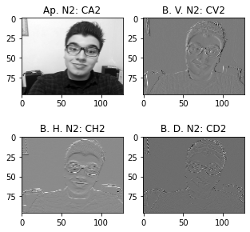

Codificação de Imagem com DWT
Codificação de Sinais Multimídia - Laboratório 4
Primeiramente, os trabalhos com o Google Colab e o OpenCV, Notebook foram iniciados. Entre os principais objetivos temos: Efetuar a Codificação de Imagem e a Decodificação por DWT e IDWT; Testar funções de Codificação Multinível e por fim, verificar a taxa de compressão só com a Componente de Aproximação.
Codificação de Luminância (P&B) com DWT
Para gerar as imagens desta seção, foi aplicado o seguinte código:
---------------------------------------
coefs2 = pywt.dwt2(img_gray,'haar', mode='periodization') #1 nível de DWT
(cA, (cH, cV, cD)) = coefs2 #Para separar os coeficientes
imgr = pywt.idwt2(coefs2, 'haar', mode = 'periodization') #1 nível de IDWT
---------------------------------------
Matheus
Sâmya

Mayara
Caíque
Cálculo do Erro Quadrático Médio (MSE) e da Relação Sinal Ruído de Pico (PSNR)
Nesta etapa, é importante ressaltar o que é e como se obtém o MSE. A MSE é obtida calculando somando-se o erro quadrático de reconstrução pixel a pixel entre a Imagem Original (O) da Reconstruída (R) e normalizando pela dimensão (LxA) da imagem:
A SNR de pico (PSNR) é definida para cada plano componente da imagem
Matheus
MSE_Y = 5.77e-25
PSNR_Luma = 290.52 dB
Sâmya
MSE_Y = 4.17e-25
PSNR_Luma = 291.93 dB
Mayara
MSE_Y = 1.03e-25
PSNR_Luma = 298.01 dB
Caíque
MSE_Y = 5.34e-25
PSNR_Luma = 290.85 dB
Teste das Funções de Multiresolução wavedec2() e waverec2()
Nesta seção, foram considerados dois níveis de decomposição DWT e dois níveis de IDWT. Em seguida, os coeficientes de cada nível foram extraidos e plotados (para mais detalhes do código, acesse o link com o Notebook)
Matheus e Sâmya
Mayara e Caíque
"Montagem" com wavedec2() e wavedecn()
Matheus
Sâmya

Mayara
Caíque
Teste das Funções de Multiresolução wavedec2() e waverec2()
Nesta seção, foi realizada a codificação por planos de cores (Vermelho, Verde e Azul). Foram considerados os níveis 1 de DWT e IDWT. Além disso, os coeficientes foram separados. Houve a reconstrução de imagem colorida para integrante do grupo. (para mais detalhes do código, acesse o link com o Notebook)
Matheus
Sâmya

Mayara
Caíque
Reconstrução Nível 1 Colorida
Matheus e Sâmya

Mayara e Caíque
Após todos estes procedimentos, as aproximações foram salvas e o download dos arquivos tiveram êxito. Com isso, a taxa de compressão com o original foi calculada:
Do mesmo modo, o arquivo codificado DWT/IDWT nível 1 colorido foi gravado e, com isso, a taxa de compressão com o original tambpem foi calculada:
Reconstrução da Imagem colorida e Cálculo da MSE de cada plano de cor e da PSNR total
Para encontrar detalhes dos códigos utilizados, acesse o link do notebook que está localizado no menu do lado esquerdo da tela.
Matheus
MSE_Red= 6.01e-25
MSE_Green= 5.83e-25
MSE_Blue= 4.96e-25
PSNR total = 285.88 dB
Sâmya
MSE_Red= 4.74e-25
MSE_Green= 4.04e-25
MSE_Blue= 4.09e-25
PSNR total = 287.03 dB
Mayara
MSE_Red= 1.54e-25
MSE_Green= 8.55e-26
MSE_Blue= 9.35e-26
PSNR total = 292.90 dB
Caíque
MSE_Red= 6.47e-25
MSE_Green= 5.13e-25
MSE_Blue= 4.90e-25
PSNR total = 285.96 dB
Link do Notebook